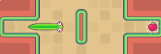
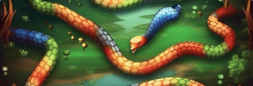
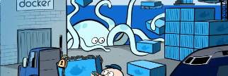
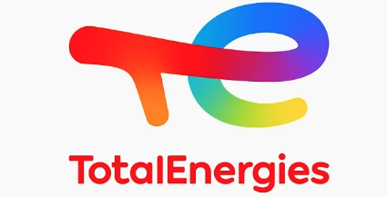

Evan Le Garrec


Compétence 1 - Réaliser un développement d'applications informatiques

Compétence 2 - Optimiser des applications informatiques

Compétence 3 - Administrer des systèmes informatiques communicants complexes

Compétence 4 - Gérer des données de l'information
Compétence 5 - Conduite de projet

Compétence 6 - Travailler dans une équipe informatique